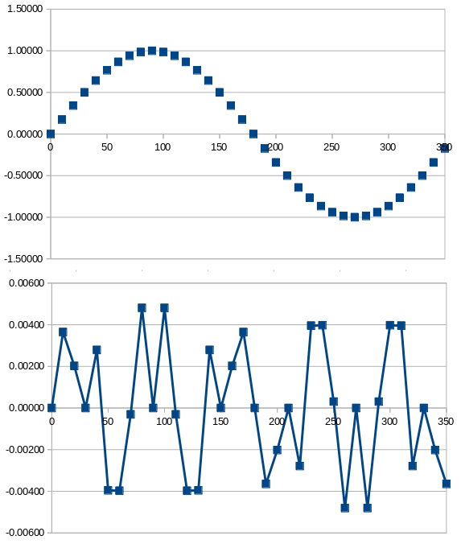
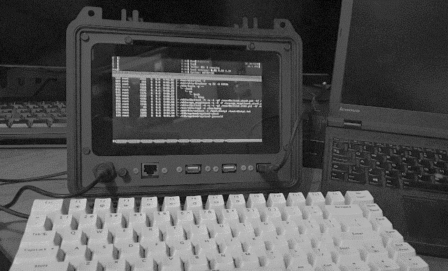
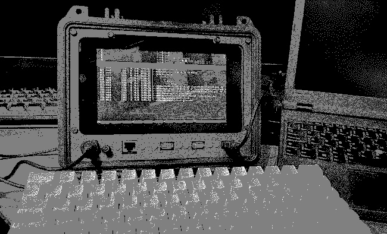
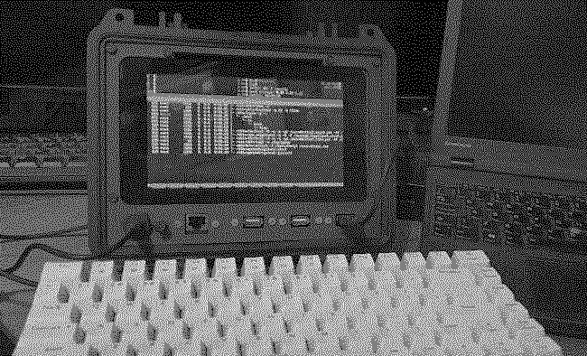

Is dithering necessary when reducing the number of bits per sample in an audio waveform?
 A situation that often arises in digital audio production is the reduction of
the number of bits per sample. Conventionally, audio CDs offer sixteen
bits per sample, but digital audio workstations usually work with
higher precision than this -- typically 24 or 32 bits. This extra
precision is needed to avoid arithmetic errors in mixing but, in addition,
some musical instruments (mostly electronic ones)
offer greater than 16-bit precision to
start with.
A situation that often arises in digital audio production is the reduction of
the number of bits per sample. Conventionally, audio CDs offer sixteen
bits per sample, but digital audio workstations usually work with
higher precision than this -- typically 24 or 32 bits. This extra
precision is needed to avoid arithmetic errors in mixing but, in addition,
some musical instruments (mostly electronic ones)
offer greater than 16-bit precision to
start with.
In a more domestic setting, it is sometimes necessary to reduce a 24-bit audio file to 16 bits, for burning to a CD, or playing on a media player that has only a 16-bit DAC.
On the face of it, this doesn't seem to be a problem -- if we want to convert 24-bit audio data to 16-bit, we can just discard the bottom (least significant) eight bits of each sample. Or, to be more mathematically robust, we can round each 24-bit sample to the nearest 16-bit sample.
For reasons that I will attempt to demonstrate, a straightforward rounding like this introduces errors that are audible -- if they are audible at all -- as distortion. So the question arises whether these errors can be reduced or, at least, made less audible.
Bit-depth reduction and distortion
In order to answer this question, we must first understand why reducing the bit-rate creates distortion in the first place. I should point out that bit-rate reduction will potentially create a problem whether it is done deliberately as part of audio engineering, or implicitly, when using a digital-to-analogue converter that has a smaller bit width that then sample data.
Consider the following data, which shows a single cycle of a sinewave. The first column, Theta is the angle from 0 to 350 degrees (I'm using angle, not time, because this is not a sinewave of any particular frequency).
The second column, V, shows the amplitude of the sinewave, between -1.0000 and 1.0000. This amplitude is shown to five significant figures. The third column shows the sample amplitude, V, but rounded to two significant figures. This rounding is "correct", in that the least-significant digit is rounded up if the following digit is 5-9, and down if it is 0-4.
Theta (degrees) | V (five figs) | V (two figs) | V error |
0 | 0.00000 | 0.00 | 0.00000 |
10 | 0.17365 | 0.17 | 0.00365 |
20 | 0.34202 | 0.34 | 0.00202 |
30 | 0.50000 | 0.50 | 0.00000 |
40 | 0.64279 | 0.64 | 0.00279 |
50 | 0.76604 | 0.77 | -0.00396 |
60 | 0.86603 | 0.87 | -0.00397 |
70 | 0.93969 | 0.94 | -0.00031 |
80 | 0.98481 | 0.98 | 0.00481 |
90 | 1.00000 | 1.00 | 0.00000 |
100 | 0.98481 | 0.98 | 0.00481 |
110 | 0.93969 | 0.94 | -0.00031 |
120 | 0.86603 | 0.87 | -0.00397 |
130 | 0.76604 | 0.77 | -0.00396 |
140 | 0.64279 | 0.64 | 0.00279 |
150 | 0.50000 | 0.50 | 0.00000 |
160 | 0.34202 | 0.34 | 0.00202 |
170 | 0.17365 | 0.17 | 0.00365 |
180 | 0.00000 | 0.00 | 0.00000 |
190 | -0.17365 | -0.17 | -0.00365 |
200 | -0.34202 | -0.34 | -0.00202 |
210 | -0.50000 | -0.50 | 0.00000 |
220 | -0.64279 | -0.64 | -0.00279 |
230 | -0.76604 | -0.77 | 0.00396 |
240 | -0.86603 | -0.87 | 0.00397 |
250 | -0.93969 | -0.94 | 0.00031 |
260 | -0.98481 | -0.98 | -0.00481 |
270 | -1.00000 | -1.00 | 0.00000 |
280 | -0.98481 | -0.98 | -0.00481 |
290 | -0.93969 | -0.94 | 0.00031 |
300 | -0.86603 | -0.87 | 0.00397 |
310 | -0.76604 | -0.77 | 0.00396 |
320 | -0.64279 | -0.64 | -0.00279 |
330 | -0.50000 | -0.50 | 0.00000 |
340 | -0.34202 | -0.34 | -0.00202 |
350 | -0.17365 | -0.17 | -0.00365 |
The fourth column shows the difference between the "true" (five-figure) sample, and the rounded two-figure sample. Note that the error figure is often zero, and its magnitude is never greater than 0.005.
The picture below shows this data graphically. The top trace is the original sinewave; the lower shows the error at each point on the sinewave. These traces are, of course, not to scale -- the error is at most 5% of the maximum amplitude in this example.

The error signal looks like "noise" here, but it isn't -- not really. That's because the same error signal will repeat identically in every cycle of the original waveform. The error can be seen as an additional audio signal with a fundamental frequency about five times that of the original waveform.
If the original sinewave were a musical note middle C, the error signal would correspond approximately to the E two-and-a-bit octaves above. You almost certainly wouldn't hear this if the sound were produced by a real musical instrument -- the E is of comparatively low amplitude, but that's not the real reason. Most real musical instruments will produce a series of overtones that will likely include an E anyway.
The problem is the error signal will depend on the intensity and shape of the original signal. This determinism means that the error is, in effect, distortion, rather than noise, albeit not conventional harmonic distortion of the kind produced by amplifiers.
How dithering works
So can this apparent distortion can be reduced? To some extent, it can -- but not without cost. One way to reduce it is to apply dithering. Dithering amounts to adding some random noise to the original samples, before reducing the number of bits and rounding. The amplitude of the noise should just be sufficient to abolish any predictable pattern in the rounded signal. In practice that means using a noise waveform with a mean amplitude half that of the least-significant digit in the original waveform.
What we accomplish by doing this is to replace a (small, we hope) distortion with an equally small amount of random noise.
Dithering schemes differ, essentially, in the pattern of the random noise applied. A uniform frequency distribution of noise is not necessarily the most effective, in terms of musicality. A common scheme is to use a triangular frequency distribution -- that is, a noise pattern with most of its amplitude in mid-frequencies. An intelligent dithering scheme will be able to adjust the frequency distribution of the noise to the content of the musical signal.
Is the ear fooled?
It's worth asking, at this point, whether the ear is fooled by this kind of manipulation. It hard to demonstrate that the ear is, in fact, capable of being fooled -- it's much easier to see visually. Visual dithering is a well-established technique. It is, effectively, how newspapers were able to show photographic images using only a mesh of black dots. Even earlier, greyscales have been simulated using techniques like cross-hatching.
Let's see how dithering works, when the number of bits per pixel is reduced in a monochrome photo. Here is the original image, which has 8-bit pixel depth (that is, 256 grey values).

Here is the same photograph reduced to just three grey levels: black, white, and mid-grey. No dithering has been applied -- each pixel has been rounded to the nearest grey level.

This simple pixel-rounding actually produces acceptable results here, because there are so few distinct grey levels in the original photograph, despite the 8-bit representation. Still, this crude reduction of bit depth results in the loss of a great deal of detail, especially in the keyboard, where there is, in fact, a spectrum of grey levels.
Here is the same photograph reduced to three grey levels, but with dithering, implemented by adding a pattern of random noise across the image, before reducing the bit depth.

The dithered image shows what appear to be a larger number of grey levels, but it's an illusion. If you look at the pixel histograms of the previous two images, you'll see that they are identical -- each has three (identical) grey levels. The eye/brain integrates the discrete pixels across regions of the image to perceive an average grey level.
Despite the (apparent) increase in detail, the dithered image is "noisier" than the image without dithering. That is, the additional randomness is somewhat visible in the dithered image. However, I should point out that a reduction from 8-bit resolution to 2-bit is a radical change -- the noise would be much less evident in an image with a larger number of grey levels.
It's not obvious that the ear would be fooled in the same way as the eye but, in fact, sometimes it is: the effect of dithering is very evident when the number of bits per sample is eight or fewer. Once we get to sixteen bits or more, it's much harder to make a case for dithering. It's important to bear in mind that the sampling-related distortion will never be more than one bit -- with a 16-bit signal, that's 0.2% of the maximum signal amplitude, or -96dB.
Compare this figure with the performance of typical studio equipment. A top-quality, completely passive, microphone is unlikely to have a signal-to-noise ratio of more than 80dB. With amplification at the microphone -- necessary to cope with long cable runs -- it will be much less than this. 80dB corresponds to about 14 bits of resolution. In practice, cabling and amplification will usually introduce a larger amount of noise than this. The end-to-end signal-to-noise ratio of a studio recording chain -- with analogue sources -- probably corresponds to about 13 bits. A one-bit distortion signal in a 16-bit sample is considerably smaller than this.
Closing remarks
Whether used in audio of video processing, dithering does not get us anything for nothing. With careful choice of the noise spectrum, we can concentrate the noise into frequency regions that are less discernible. It is often claimed that, with optimal dithering, the effective dynamic range of a 16-bit audio signal can be increased from a theoretical 96 dB (65,536 to 1) to 120 dB. This is an increase in dynamic range of a factor of 16, or four bits.
However, no analogue or electronic recording technique offers a signal-to-noise ratio even close to this. If fact, it's extremely difficult to achieve an instrument-to-ADC signal-to-noise ratio of more than about 80dB, even with top-notch equipment in expert hands.
The noise introduced by dithering could, therefore, be an order of magnitude smaller than the noise that already exists from the recording process. By dithering, we could be doing nothing more than resolving the recording noise better.
As always, the ultimate test is the ear. When I convert from 24-bit to 16-bit samples, I can't hear any difference between the dithered and the straight conversion. But that doesn't mean that nobody can. Dithering was routinely used in the mastering of CD recordings, and nobody really questioned that it was effective.
Even if the difference between dithered and non-dithered conversion is actually audible -- and this is hard to demonstrate with high-resolution samples -- there's no guarantee that a listener would prefer one version over the other. Consider the visual demonstration I showed above -- both the dithered and non-dithered images have appealing and unappealing elements. I don't see why that wouldn't be the case for audio as well.
If anybody knows of any rigorously-conducted, double-blinded laboratory tests in this area, I would certainly like to hear about them.